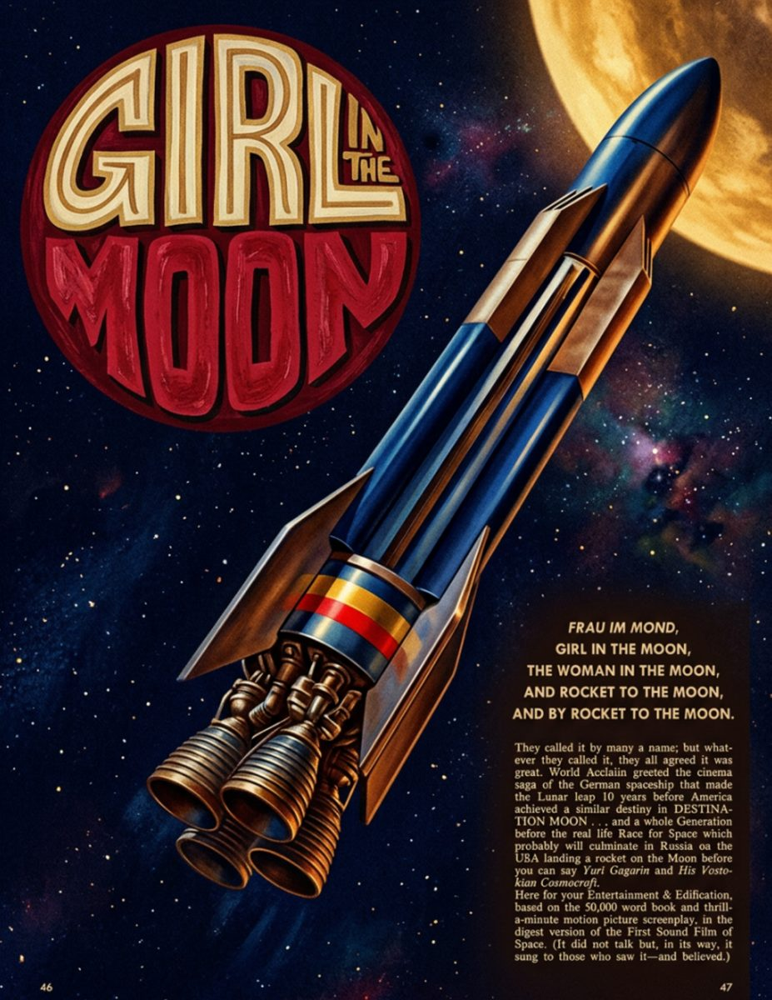

Girl in the Moon
She rocketed past the Moon before the talkies had finished learning to talk, and audiences have never looked at the sky the same way since. We reprint her famous voyage here in full, lavish color.
Long before the first satellite beeped its way across the night sky, our cover girl buckled into a finned silver rocket and pointed the nose straight at the cheese. The countdown alone sold a million tickets. The take-off sold the popcorn.
These days her route is a scheduled service. The Earth-to-Moon run departs twice a week, meteor showers permitting, and the in-flight reading is the very magazine now resting in your hands. Passengers are reminded, gently but firmly, that the windows do not open.
As for what waits at the end of the line, this magazine has investigated the cheese question at length and can confirm the Moon is, at the very least, cheese-adjacent. The aroma alone is worth the price of the fare.
Moonship Notes
Second class seating upon the Moonship is available for a limited time.
Cabins face the Earthrise side of the ship, and every ticket includes a complimentary helmet polish before boarding.
First class passengers receive a window seat, a spare helmet, and unlimited access to the observation bubble, where the cheese is said to look close enough to spread.
The galley runs a rotating menu of moon-grown delicacies, paired each evening with the lunar vintages our travel desk will not stop talking about. Root-eaters, vacuum-breathers, and the merely hungry are accommodated with advance notice.
Rocket Copy
Rocket dreams are not made from cheese but they are made from the same stuff as the stars. The moon is a place of wonder and mystery, and it has captured the human imagination for centuries. From the earliest myths and legends to the modern era of space exploration, the moon has been a source of inspiration and fascination for people around the world.
Aliquam consequat tortor ac justo mattis, eget dictum felis viverra. Nulla facilisi.